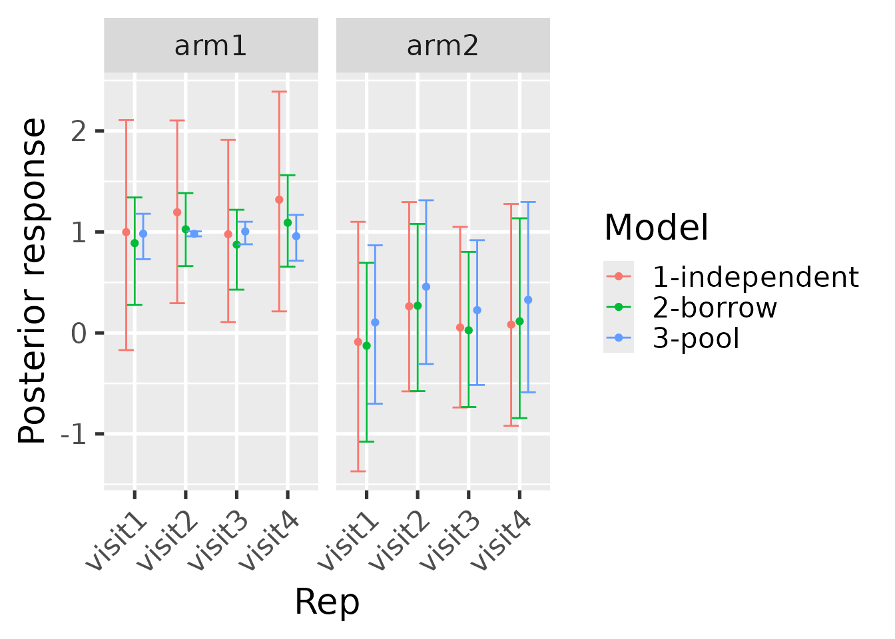

This tutorial shows how to fit historical control-group borrowing models using the historicalborrowlong package.
Data
historicalborrowlong expects data on multiple patients partitioned into studies, groups, and repeated measures (“reps”). Here is a simulated example. There are functions to simulate from the prior predictive distribution of each of the hierarchical, independent, and pooled models.
library(historicalborrowlong)
library(dplyr)
set.seed(0)
data <- hbl_sim_independent(
n_continuous = 1,
n_study = 3,
n_group = 2,
n_rep = 4,
alpha = rep(1, 12),
delta = rep(0.5, 4),
n_patient = 10
)$data %>%
rename(
outcome = response,
trial = study,
arm = group,
subject = patient,
visit = rep,
factor1 = covariate_study1_continuous1,
factor2 = covariate_study2_continuous1
) %>%
mutate(
trial = paste0("trial", trial),
arm = paste0("arm", arm),
subject = paste0("subject", subject),
visit = paste0("visit", visit),
)
data
#> # A tibble: 160 × 8
#> trial arm subject visit factor1 factor2 covariate_study3_conti…¹ outcome
#> <chr> <chr> <chr> <chr> <dbl> <dbl> <dbl> <dbl>
#> 1 trial1 arm1 subject1 visit1 0.764 0 0 3.54
#> 2 trial1 arm1 subject1 visit2 0.764 0 0 2.92
#> 3 trial1 arm1 subject1 visit3 0.764 0 0 3.22
#> 4 trial1 arm1 subject1 visit4 0.764 0 0 3.32
#> 5 trial1 arm1 subject2 visit1 -0.799 0 0 0.426
#> 6 trial1 arm1 subject2 visit2 -0.799 0 0 -0.521
#> 7 trial1 arm1 subject2 visit3 -0.799 0 0 0.334
#> 8 trial1 arm1 subject2 visit4 -0.799 0 0 0.288
#> 9 trial1 arm1 subject3 visit1 -1.15 0 0 -1.05
#> 10 trial1 arm1 subject3 visit2 -1.15 0 0 -0.485
#> # … with 150 more rows, and abbreviated variable name
#> # ¹covariate_study3_continuous1You as the user will choose a reference level of the study (“trial”) column to indicate which study is the current one (the other are historical). Likewise, you will choose a level of the group (“arm”) column to indicate which group is the control group and a level of the rep (“visit”) column to indicate the first measurement of each patient (baseline). To see how historicalborrowlong assigns numeric indexes to the study and group levels, use hbl_data(). Viewing this output may assist with interpreting the results later on.
standardized_data <- hbl_data(
data = data,
response = "outcome",
study = "trial",
study_reference = "trial3",
group = "arm",
group_reference = "arm1",
patient = "subject",
rep = "visit",
rep_reference = "visit1",
# Can be continuous, categorical, or binary columns:
covariates = c("factor1", "factor2")
)
standardized_data
#> # A tibble: 160 × 11
#> study patient patient_l…¹ rep rep_l…² respo…³ study…⁴ group…⁵ group covar…⁶
#> <int> <int> <chr> <int> <chr> <dbl> <chr> <chr> <int> <dbl>
#> 1 1 1 subject1 1 visit1 3.54 trial1 arm1 1 0.764
#> 2 1 1 subject1 2 visit2 2.92 trial1 arm1 1 0.764
#> 3 1 1 subject1 3 visit3 3.22 trial1 arm1 1 0.764
#> 4 1 1 subject1 4 visit4 3.32 trial1 arm1 1 0.764
#> 5 1 2 subject10 1 visit1 -2.00 trial1 arm1 1 -1.24
#> 6 1 2 subject10 2 visit2 0.0929 trial1 arm1 1 -1.24
#> 7 1 2 subject10 3 visit3 -0.478 trial1 arm1 1 -1.24
#> 8 1 2 subject10 4 visit4 -0.803 trial1 arm1 1 -1.24
#> 9 1 12 subject2 1 visit1 0.426 trial1 arm1 1 -0.799
#> 10 1 12 subject2 2 visit2 -0.521 trial1 arm1 1 -0.799
#> # … with 150 more rows, 1 more variable: covariate_factor2 <dbl>, and
#> # abbreviated variable names ¹patient_label, ²rep_label, ³response,
#> # ⁴study_label, ⁵group_label, ⁶covariate_factor1
distinct(
standardized_data,
study,
study_label,
group,
group_label,
rep,
rep_label
) %>%
select(
study,
study_label,
group,
group_label,
rep,
rep_label
)
#> # A tibble: 16 × 6
#> study study_label group group_label rep rep_label
#> <int> <chr> <int> <chr> <int> <chr>
#> 1 1 trial1 1 arm1 1 visit1
#> 2 1 trial1 1 arm1 2 visit2
#> 3 1 trial1 1 arm1 3 visit3
#> 4 1 trial1 1 arm1 4 visit4
#> 5 2 trial2 1 arm1 1 visit1
#> 6 2 trial2 1 arm1 2 visit2
#> 7 2 trial2 1 arm1 3 visit3
#> 8 2 trial2 1 arm1 4 visit4
#> 9 3 trial3 1 arm1 1 visit1
#> 10 3 trial3 1 arm1 2 visit2
#> 11 3 trial3 1 arm1 3 visit3
#> 12 3 trial3 1 arm1 4 visit4
#> 13 3 trial3 2 arm2 1 visit1
#> 14 3 trial3 2 arm2 2 visit2
#> 15 3 trial3 2 arm2 3 visit3
#> 16 3 trial3 2 arm2 4 visit4As explained in the hbl_data() and hb_mcmc_*() help files, before running the MCMC, dataset is pre-processed. This includes expanding the rows of the data so every rep of every patient gets an explicit row. So if your original data has irregular rep IDs, e.g. unscheduled visits in a clinical trial that few patients attend, please remove them before the analysis. Only the most common rep IDs should be added.
After expanding the rows, the function fills in missing values for every column except the response. That includes covariates. Missing covariate values are filled in, first with last observation carried forward, then with last observation carried backward. If there are still missing values after this process, the program throws an informative error.
Models
Recommended: run all models using hbl_mcmc_sge()
The hbl_mcmc_sge() function runs all 3 models of interest on a Sun Grid Engine (SGE) computing cluster and returns a list of results from all three models. For standardized analyses of real studies, this is highly recommended over the alternative of running each model separately (hbl_mcmc_hierarchical(), hbl_mcmc_pool(), and hbl_mcmc_independent(), as in the next subsection).
In hbl_mcmc_sge(), each model runs in its own SGE job, and chains run in parallel across the cores available to each job. The return value is a list of results from each model (hierarchical, independent, and pooled) that you would get by running hbl_mcmc_hierarchical(), hbl_mcmc_pool(), and hbl_mcmc_independent() separately. Each of these data frames each be supplied separately to hbl_summary() as explained later in this vignette.
mcmc <- hbl_mcmc_sge(
data = data,
response = "outcome",
study = "trial",
study_reference = "trial3",
group = "arm",
group_reference = "arm1",
patient = "subject",
rep = "visit",
rep_reference = "visit1",
# Can be continuous, categorical, or binary columns:
covariates = c("factor1", "factor2"),
# Raise these arguments for serious analyses:
chains = 1, # Increase to about 3 or 4 in real-life use cases.
cores = 1, # *HIGHLY* recommended to have cores = chains
iter = 20, # Increase to several thousand in real-life use cases.
warmup = 10, # Increase to several thousand in real-life use cases.
log = "/dev/null", # optional SGE log file, /dev/null to disregard the log
scheduler = "local" # Set to "sge" for serious analysis.
)#>
#> SAMPLING FOR MODEL 'model' NOW (CHAIN 1).
#> Chain 1:
#> Chain 1: Gradient evaluation took 0.000116 seconds
#> Chain 1: 1000 transitions using 10 leapfrog steps per transition would take 1.16 seconds.
#> Chain 1: Adjust your expectations accordingly!
#> Chain 1:
#> Chain 1:
#> Chain 1: WARNING: No variance estimation is
#> Chain 1: performed for num_warmup < 20
#> Chain 1:
#> Chain 1: Iteration: 1 / 20 [ 5%] (Warmup)
#> Chain 1: Iteration: 2 / 20 [ 10%] (Warmup)
#> Chain 1: Iteration: 4 / 20 [ 20%] (Warmup)
#> Chain 1: Iteration: 6 / 20 [ 30%] (Warmup)
#> Chain 1: Iteration: 8 / 20 [ 40%] (Warmup)
#> Chain 1: Iteration: 10 / 20 [ 50%] (Warmup)
#> Chain 1: Iteration: 11 / 20 [ 55%] (Sampling)
#> Chain 1: Iteration: 12 / 20 [ 60%] (Sampling)
#> Chain 1: Iteration: 14 / 20 [ 70%] (Sampling)
#> Chain 1: Iteration: 16 / 20 [ 80%] (Sampling)
#> Chain 1: Iteration: 18 / 20 [ 90%] (Sampling)
#> Chain 1: Iteration: 20 / 20 [100%] (Sampling)
#> Chain 1:
#> Chain 1: Elapsed Time: 0.091707 seconds (Warm-up)
#> Chain 1: 0.556165 seconds (Sampling)
#> Chain 1: 0.647872 seconds (Total)
#> Chain 1:
#>
#> SAMPLING FOR MODEL 'model' NOW (CHAIN 1).
#> Chain 1:
#> Chain 1: Gradient evaluation took 0.000126 seconds
#> Chain 1: 1000 transitions using 10 leapfrog steps per transition would take 1.26 seconds.
#> Chain 1: Adjust your expectations accordingly!
#> Chain 1:
#> Chain 1:
#> Chain 1: WARNING: No variance estimation is
#> Chain 1: performed for num_warmup < 20
#> Chain 1:
#> Chain 1: Iteration: 1 / 20 [ 5%] (Warmup)
#> Chain 1: Iteration: 2 / 20 [ 10%] (Warmup)
#> Chain 1: Iteration: 4 / 20 [ 20%] (Warmup)
#> Chain 1: Iteration: 6 / 20 [ 30%] (Warmup)
#> Chain 1: Iteration: 8 / 20 [ 40%] (Warmup)
#> Chain 1: Iteration: 10 / 20 [ 50%] (Warmup)
#> Chain 1: Iteration: 11 / 20 [ 55%] (Sampling)
#> Chain 1: Iteration: 12 / 20 [ 60%] (Sampling)
#> Chain 1: Iteration: 14 / 20 [ 70%] (Sampling)
#> Chain 1: Iteration: 16 / 20 [ 80%] (Sampling)
#> Chain 1: Iteration: 18 / 20 [ 90%] (Sampling)
#> Chain 1: Iteration: 20 / 20 [100%] (Sampling)
#> Chain 1:
#> Chain 1: Elapsed Time: 0.144217 seconds (Warm-up)
#> Chain 1: 0.062952 seconds (Sampling)
#> Chain 1: 0.207169 seconds (Total)
#> Chain 1:
#>
#> SAMPLING FOR MODEL 'model' NOW (CHAIN 1).
#> Chain 1:
#> Chain 1: Gradient evaluation took 0.000104 seconds
#> Chain 1: 1000 transitions using 10 leapfrog steps per transition would take 1.04 seconds.
#> Chain 1: Adjust your expectations accordingly!
#> Chain 1:
#> Chain 1:
#> Chain 1: WARNING: No variance estimation is
#> Chain 1: performed for num_warmup < 20
#> Chain 1:
#> Chain 1: Iteration: 1 / 20 [ 5%] (Warmup)
#> Chain 1: Iteration: 2 / 20 [ 10%] (Warmup)
#> Chain 1: Iteration: 4 / 20 [ 20%] (Warmup)
#> Chain 1: Iteration: 6 / 20 [ 30%] (Warmup)
#> Chain 1: Iteration: 8 / 20 [ 40%] (Warmup)
#> Chain 1: Iteration: 10 / 20 [ 50%] (Warmup)
#> Chain 1: Iteration: 11 / 20 [ 55%] (Sampling)
#> Chain 1: Iteration: 12 / 20 [ 60%] (Sampling)
#> Chain 1: Iteration: 14 / 20 [ 70%] (Sampling)
#> Chain 1: Iteration: 16 / 20 [ 80%] (Sampling)
#> Chain 1: Iteration: 18 / 20 [ 90%] (Sampling)
#> Chain 1: Iteration: 20 / 20 [100%] (Sampling)
#> Chain 1:
#> Chain 1: Elapsed Time: 0.09804 seconds (Warm-up)
#> Chain 1: 0.091936 seconds (Sampling)
#> Chain 1: 0.189976 seconds (Total)
#> Chain 1:
mcmc
#> $hierarchical
#> # A tibble: 10 × 69
#> `alpha[1]` `alpha[2]` alpha…¹ alpha…² alpha…³ alpha…⁴ alpha…⁵ alpha…⁶ alpha…⁷
#> <dbl> <dbl> <dbl> <dbl> <dbl> <dbl> <dbl> <dbl> <dbl>
#> 1 1.11 0.937 0.899 0.654 0.367 -0.291 -0.251 1.62 6.72
#> 2 0.632 0.941 0.836 0.946 -0.553 0.670 -0.382 2.13 1.86
#> 3 0.731 1.19 0.976 1.09 0.201 0.992 0.930 1.59 0.0843
#> 4 0.986 0.631 1.08 0.466 0.347 0.986 1.56 1.36 0.649
#> 5 0.786 1.49 0.972 0.539 0.251 0.988 1.25 1.49 0.763
#> 6 0.990 1.24 0.969 0.679 0.820 0.989 1.32 1.08 0.428
#> 7 0.704 1.17 1.09 0.582 0.227 0.982 0.640 1.04 0.0642
#> 8 0.732 1.11 1.00 0.633 0.388 0.989 1.02 1.16 0.243
#> 9 0.891 1.10 0.994 0.677 0.615 1.01 1.41 1.38 0.533
#> 10 1.22 0.983 0.968 0.537 1.06 0.982 1.48 1.31 0.850
#> # … with 60 more variables: `alpha[10]` <dbl>, `alpha[11]` <dbl>,
#> # `alpha[12]` <dbl>, `delta[1]` <dbl>, `delta[2]` <dbl>, `delta[3]` <dbl>,
#> # `delta[4]` <dbl>, `beta[1]` <dbl>, `beta[2]` <dbl>, `sigma[1,1]` <dbl>,
#> # `sigma[2,1]` <dbl>, `sigma[3,1]` <dbl>, `sigma[1,2]` <dbl>,
#> # `sigma[2,2]` <dbl>, `sigma[3,2]` <dbl>, `sigma[1,3]` <dbl>,
#> # `sigma[2,3]` <dbl>, `sigma[3,3]` <dbl>, `sigma[1,4]` <dbl>,
#> # `sigma[2,4]` <dbl>, `sigma[3,4]` <dbl>, `mu[1]` <dbl>, `mu[2]` <dbl>, …
#>
#> $independent
#> # A tibble: 10 × 61
#> `alpha[1]` `alpha[2]` alpha…¹ alpha…² alpha…³ alpha…⁴ alpha…⁵ alpha…⁶ alpha…⁷
#> <dbl> <dbl> <dbl> <dbl> <dbl> <dbl> <dbl> <dbl> <dbl>
#> 1 1.28 -1.16 1.15 1.01 -0.306 0.957 0.568 0.548 -0.670
#> 2 1.25 -1.49 1.15 1.03 0.930 0.985 1.50 1.45 0.176
#> 3 1.14 -1.54 1.08 1.18 0.808 0.985 1.44 1.45 0.239
#> 4 0.942 -1.11 1.42 0.869 0.473 0.992 1.38 1.62 0.661
#> 5 0.933 -1.11 1.41 0.872 0.476 0.995 1.38 1.62 0.675
#> 6 0.933 -1.11 1.41 0.872 0.476 0.995 1.38 1.62 0.675
#> 7 0.935 -1.10 1.40 0.882 0.492 0.987 1.37 1.62 0.661
#> 8 0.926 -1.12 1.41 0.905 0.489 0.985 1.37 1.63 0.650
#> 9 0.926 -1.12 1.41 0.905 0.489 0.985 1.37 1.63 0.650
#> 10 0.737 -1.13 1.22 0.854 0.622 0.990 1.28 1.56 0.559
#> # … with 52 more variables: `alpha[10]` <dbl>, `alpha[11]` <dbl>,
#> # `alpha[12]` <dbl>, `delta[1]` <dbl>, `delta[2]` <dbl>, `delta[3]` <dbl>,
#> # `delta[4]` <dbl>, `beta[1]` <dbl>, `beta[2]` <dbl>, `sigma[1,1]` <dbl>,
#> # `sigma[2,1]` <dbl>, `sigma[3,1]` <dbl>, `sigma[1,2]` <dbl>,
#> # `sigma[2,2]` <dbl>, `sigma[3,2]` <dbl>, `sigma[1,3]` <dbl>,
#> # `sigma[2,3]` <dbl>, `sigma[3,3]` <dbl>, `sigma[1,4]` <dbl>,
#> # `sigma[2,4]` <dbl>, `sigma[3,4]` <dbl>, lp__ <dbl>, .chain <int>, …
#>
#> $pool
#> # A tibble: 10 × 53
#> `alpha[1]` `alpha[2]` alpha…¹ alpha…² delta…³ delta…⁴ delta…⁵ delta…⁶ beta[…⁷
#> <dbl> <dbl> <dbl> <dbl> <dbl> <dbl> <dbl> <dbl> <dbl>
#> 1 0.849 0.971 0.993 0.952 0.612 0.869 0.854 0.655 1.34
#> 2 1.13 0.977 0.978 1.09 0.672 0.714 0.712 0.614 1.24
#> 3 1.00 1.00 0.978 1.02 0.160 0.899 0.353 0.774 1.33
#> 4 1.03 0.998 1.06 1.18 0.332 0.528 0.307 0.392 1.32
#> 5 1.19 0.994 1.02 1.03 0.219 0.523 0.305 0.764 1.29
#> 6 0.874 0.982 1.01 0.778 0.423 0.701 0.506 0.564 1.28
#> 7 1.09 0.993 1.04 1.03 0.353 0.476 0.445 0.255 1.21
#> 8 1.02 0.999 1.05 0.729 -0.0801 0.657 0.219 0.254 1.26
#> 9 1.14 1.01 1.00 1.32 0.0680 0.0635 -0.218 0.436 1.26
#> 10 0.932 0.972 1.03 0.862 0.0253 0.0129 -0.142 -0.0206 1.28
#> # … with 44 more variables: `beta[2]` <dbl>, `sigma[1,1]` <dbl>,
#> # `sigma[2,1]` <dbl>, `sigma[3,1]` <dbl>, `sigma[1,2]` <dbl>,
#> # `sigma[2,2]` <dbl>, `sigma[3,2]` <dbl>, `sigma[1,3]` <dbl>,
#> # `sigma[2,3]` <dbl>, `sigma[3,3]` <dbl>, `sigma[1,4]` <dbl>,
#> # `sigma[2,4]` <dbl>, `sigma[3,4]` <dbl>, lp__ <dbl>, .chain <int>,
#> # .iteration <int>, .draw <int>, `lambda_current[1,2,1]` <dbl>,
#> # `lambda_current[1,3,1]` <dbl>, `lambda_current[1,4,1]` <dbl>, …Alternative: run specific models
The hierarchical model is the primary model of interest.1
mcmc_hierarchical <- hbl_mcmc_hierarchical(
data = data,
response = "outcome",
study = "trial",
study_reference = "trial3",
group = "arm",
group_reference = "arm1",
patient = "subject",
rep = "visit",
rep_reference = "visit1",
# Can be continuous, categorical, or binary columns.
covariates = c("factor1", "factor2"),
# Raise these arguments for serious analyses:
chains = 1, # Increase to about 3 or 4 in real-life use cases.
iter = 400, # Increase to several thousand in real-life use cases.
warmup = 200, # Increase to several thousand in real-life use cases.
cores = 1 # Optionally run different chains in different processes.
)#>
#> SAMPLING FOR MODEL 'model' NOW (CHAIN 1).
#> Chain 1:
#> Chain 1: Gradient evaluation took 0.000136 seconds
#> Chain 1: 1000 transitions using 10 leapfrog steps per transition would take 1.36 seconds.
#> Chain 1: Adjust your expectations accordingly!
#> Chain 1:
#> Chain 1:
#> Chain 1: Iteration: 1 / 400 [ 0%] (Warmup)
#> Chain 1: Iteration: 40 / 400 [ 10%] (Warmup)
#> Chain 1: Iteration: 80 / 400 [ 20%] (Warmup)
#> Chain 1: Iteration: 120 / 400 [ 30%] (Warmup)
#> Chain 1: Iteration: 160 / 400 [ 40%] (Warmup)
#> Chain 1: Iteration: 200 / 400 [ 50%] (Warmup)
#> Chain 1: Iteration: 201 / 400 [ 50%] (Sampling)
#> Chain 1: Iteration: 240 / 400 [ 60%] (Sampling)
#> Chain 1: Iteration: 280 / 400 [ 70%] (Sampling)
#> Chain 1: Iteration: 320 / 400 [ 80%] (Sampling)
#> Chain 1: Iteration: 360 / 400 [ 90%] (Sampling)
#> Chain 1: Iteration: 400 / 400 [100%] (Sampling)
#> Chain 1:
#> Chain 1: Elapsed Time: 19.5846 seconds (Warm-up)
#> Chain 1: 9.03425 seconds (Sampling)
#> Chain 1: 28.6189 seconds (Total)
#> Chain 1:
mcmc_hierarchical
#> # A tibble: 200 × 69
#> `alpha[1]` `alpha[2]` alpha…¹ alpha…² alpha…³ alpha…⁴ alpha…⁵ alpha…⁶ alpha…⁷
#> <dbl> <dbl> <dbl> <dbl> <dbl> <dbl> <dbl> <dbl> <dbl>
#> 1 1.29 0.961 0.951 1.01 -0.532 0.986 0.823 0.640 0.573
#> 2 0.793 1.13 0.967 0.543 0.743 0.981 1.35 1.72 0.815
#> 3 0.498 1.04 1.01 0.531 0.434 0.989 0.990 0.746 0.524
#> 4 1.96 0.992 0.945 0.952 0.589 0.991 1.12 0.774 0.604
#> 5 0.981 0.974 0.961 0.441 0.862 0.986 1.36 1.22 1.01
#> 6 0.876 0.961 1.05 0.820 -0.0899 0.974 0.700 0.697 0.409
#> 7 1.53 0.877 0.901 0.658 0.458 0.974 0.900 1.42 0.998
#> 8 0.902 0.808 1.04 0.882 0.433 0.974 1.06 1.11 0.791
#> 9 1.36 0.993 0.952 1.13 0.602 0.977 1.09 1.09 0.634
#> 10 1.18 0.883 0.997 1.05 0.0816 0.978 0.975 0.794 0.614
#> # … with 190 more rows, 60 more variables: `alpha[10]` <dbl>,
#> # `alpha[11]` <dbl>, `alpha[12]` <dbl>, `delta[1]` <dbl>, `delta[2]` <dbl>,
#> # `delta[3]` <dbl>, `delta[4]` <dbl>, `beta[1]` <dbl>, `beta[2]` <dbl>,
#> # `sigma[1,1]` <dbl>, `sigma[2,1]` <dbl>, `sigma[3,1]` <dbl>,
#> # `sigma[1,2]` <dbl>, `sigma[2,2]` <dbl>, `sigma[3,2]` <dbl>,
#> # `sigma[1,3]` <dbl>, `sigma[2,3]` <dbl>, `sigma[3,3]` <dbl>,
#> # `sigma[1,4]` <dbl>, `sigma[2,4]` <dbl>, `sigma[3,4]` <dbl>, …The pooled and independent models are benchmarks used to quantify the borrowing strength of the hierarchical model. To run these benchmark models, run the functions below. Each function returns a data frame with one column per parameter and one row per posterior sample.
mcmc_pool <- hbl_mcmc_pool(
data = data,
response = "outcome",
study = "trial",
study_reference = "trial3",
group = "arm",
group_reference = "arm1",
patient = "subject",
rep = "visit",
rep_reference = "visit1",
# Can be continuous, categorical, or binary columns:
covariates = c("factor1", "factor2"),
# Raise these arguments for serious analyses:
chains = 1, # Increase to about 3 or 4 in real-life use cases.
iter = 400, # Increase to several thousand in real-life use cases.
warmup = 200, # Increase to several thousand in real-life use cases.
cores = 1 # Optionally run different chains in different processes.
)#>
#> SAMPLING FOR MODEL 'model' NOW (CHAIN 1).
#> Chain 1:
#> Chain 1: Gradient evaluation took 0.0001 seconds
#> Chain 1: 1000 transitions using 10 leapfrog steps per transition would take 1 seconds.
#> Chain 1: Adjust your expectations accordingly!
#> Chain 1:
#> Chain 1:
#> Chain 1: Iteration: 1 / 400 [ 0%] (Warmup)
#> Chain 1: Iteration: 40 / 400 [ 10%] (Warmup)
#> Chain 1: Iteration: 80 / 400 [ 20%] (Warmup)
#> Chain 1: Iteration: 120 / 400 [ 30%] (Warmup)
#> Chain 1: Iteration: 160 / 400 [ 40%] (Warmup)
#> Chain 1: Iteration: 200 / 400 [ 50%] (Warmup)
#> Chain 1: Iteration: 201 / 400 [ 50%] (Sampling)
#> Chain 1: Iteration: 240 / 400 [ 60%] (Sampling)
#> Chain 1: Iteration: 280 / 400 [ 70%] (Sampling)
#> Chain 1: Iteration: 320 / 400 [ 80%] (Sampling)
#> Chain 1: Iteration: 360 / 400 [ 90%] (Sampling)
#> Chain 1: Iteration: 400 / 400 [100%] (Sampling)
#> Chain 1:
#> Chain 1: Elapsed Time: 4.12869 seconds (Warm-up)
#> Chain 1: 1.85884 seconds (Sampling)
#> Chain 1: 5.98753 seconds (Total)
#> Chain 1:
mcmc_pool
#> # A tibble: 200 × 53
#> `alpha[1]` `alpha[2]` alpha…¹ alpha…² delta…³ delta…⁴ delta…⁵ delta…⁶ beta[…⁷
#> <dbl> <dbl> <dbl> <dbl> <dbl> <dbl> <dbl> <dbl> <dbl>
#> 1 0.923 0.992 1.05 0.871 0.620 1.14 0.766 0.881 1.27
#> 2 0.954 0.983 1.03 0.906 0.322 1.05 0.383 1.10 1.32
#> 3 0.794 0.976 1.01 0.710 -0.114 0.794 0.176 0.776 1.19
#> 4 0.825 0.984 1.05 0.794 0.107 0.471 0.305 0.212 1.26
#> 5 0.875 0.974 0.969 0.858 0.117 0.694 0.241 0.519 1.27
#> 6 1.03 0.994 0.991 0.930 -0.165 0.294 0.143 0.164 1.28
#> 7 1.18 0.979 0.978 0.870 -0.203 0.156 -0.0935 0.0806 1.30
#> 8 0.866 0.989 1.01 0.832 0.103 0.510 0.181 0.241 1.23
#> 9 1.13 0.985 1.03 0.828 0.845 0.800 0.824 0.705 1.30
#> 10 0.741 0.986 0.961 0.857 0.111 0.667 0.0651 0.592 1.25
#> # … with 190 more rows, 44 more variables: `beta[2]` <dbl>, `sigma[1,1]` <dbl>,
#> # `sigma[2,1]` <dbl>, `sigma[3,1]` <dbl>, `sigma[1,2]` <dbl>,
#> # `sigma[2,2]` <dbl>, `sigma[3,2]` <dbl>, `sigma[1,3]` <dbl>,
#> # `sigma[2,3]` <dbl>, `sigma[3,3]` <dbl>, `sigma[1,4]` <dbl>,
#> # `sigma[2,4]` <dbl>, `sigma[3,4]` <dbl>, lp__ <dbl>, .chain <int>,
#> # .iteration <int>, .draw <int>, `lambda_current[1,2,1]` <dbl>,
#> # `lambda_current[1,3,1]` <dbl>, `lambda_current[1,4,1]` <dbl>, …
mcmc_independent <- hbl_mcmc_independent(
data = data,
response = "outcome",
study = "trial",
study_reference = "trial3",
group = "arm",
group_reference = "arm1",
patient = "subject",
rep = "visit",
rep_reference = "visit1",
covariates = c("factor1", "factor2"),
# Raise these arguments for serious analyses:
chains = 1, # Increase to about 3 or 4 in real-life use cases.
iter = 400, # Increase to several thousand in real-life use cases.
warmup = 200, # Increase to several thousand in real-life use cases.
cores = 1 # Optionally run different chains in different processes.
)#>
#> SAMPLING FOR MODEL 'model' NOW (CHAIN 1).
#> Chain 1:
#> Chain 1: Gradient evaluation took 0.000126 seconds
#> Chain 1: 1000 transitions using 10 leapfrog steps per transition would take 1.26 seconds.
#> Chain 1: Adjust your expectations accordingly!
#> Chain 1:
#> Chain 1:
#> Chain 1: Iteration: 1 / 400 [ 0%] (Warmup)
#> Chain 1: Iteration: 40 / 400 [ 10%] (Warmup)
#> Chain 1: Iteration: 80 / 400 [ 20%] (Warmup)
#> Chain 1: Iteration: 120 / 400 [ 30%] (Warmup)
#> Chain 1: Iteration: 160 / 400 [ 40%] (Warmup)
#> Chain 1: Iteration: 200 / 400 [ 50%] (Warmup)
#> Chain 1: Iteration: 201 / 400 [ 50%] (Sampling)
#> Chain 1: Iteration: 240 / 400 [ 60%] (Sampling)
#> Chain 1: Iteration: 280 / 400 [ 70%] (Sampling)
#> Chain 1: Iteration: 320 / 400 [ 80%] (Sampling)
#> Chain 1: Iteration: 360 / 400 [ 90%] (Sampling)
#> Chain 1: Iteration: 400 / 400 [100%] (Sampling)
#> Chain 1:
#> Chain 1: Elapsed Time: 4.59925 seconds (Warm-up)
#> Chain 1: 1.51155 seconds (Sampling)
#> Chain 1: 6.1108 seconds (Total)
#> Chain 1:
mcmc_independent
#> # A tibble: 200 × 61
#> `alpha[1]` `alpha[2]` alpha…¹ alpha…² alpha…³ alpha…⁴ alpha…⁵ alpha…⁶ alpha…⁷
#> <dbl> <dbl> <dbl> <dbl> <dbl> <dbl> <dbl> <dbl> <dbl>
#> 1 0.946 1.03 1.03 0.447 0.785 0.978 1.26 1.16 2.04
#> 2 0.681 1.30 1.03 0.457 0.642 0.987 1.02 1.13 2.00
#> 3 1.57 1.12 1.07 0.724 0.611 0.983 1.31 1.24 0.942
#> 4 1.50 0.939 1.04 0.881 0.596 0.982 1.04 1.25 1.14
#> 5 1.16 1.03 0.948 0.943 0.0230 0.987 1.53 1.14 1.24
#> 6 1.35 0.949 1.03 1.04 0.552 0.980 1.03 0.898 0.913
#> 7 0.312 1.13 0.991 0.423 0.480 0.999 1.47 1.01 1.14
#> 8 1.13 0.850 0.948 1.06 0.324 0.995 1.40 1.08 -0.238
#> 9 1.49 1.06 0.989 1.09 0.408 0.979 1.17 1.31 0.103
#> 10 0.924 0.861 0.948 0.831 1.09 1.00 1.34 1.12 0.859
#> # … with 190 more rows, 52 more variables: `alpha[10]` <dbl>,
#> # `alpha[11]` <dbl>, `alpha[12]` <dbl>, `delta[1]` <dbl>, `delta[2]` <dbl>,
#> # `delta[3]` <dbl>, `delta[4]` <dbl>, `beta[1]` <dbl>, `beta[2]` <dbl>,
#> # `sigma[1,1]` <dbl>, `sigma[2,1]` <dbl>, `sigma[3,1]` <dbl>,
#> # `sigma[1,2]` <dbl>, `sigma[2,2]` <dbl>, `sigma[3,2]` <dbl>,
#> # `sigma[1,3]` <dbl>, `sigma[2,3]` <dbl>, `sigma[3,3]` <dbl>,
#> # `sigma[1,4]` <dbl>, `sigma[2,4]` <dbl>, `sigma[3,4]` <dbl>, lp__ <dbl>, …Model performance
A typical workflow will run all three models. Since each model can take several hours to run, it is strongly recommended to:
- For each model, run all chains in parallel by setting the
coresargument equal tochains. - Run all models concurrently on different jobs on a computing cluster. Since
coreswill usually be greater than 1, it is strongly recommended that each cluster job have as many cores/slots as thecoresargument.
Convergence
It is important to check convergence diagnostics on each model. The hbl_convergence() function returns data frame of summarized convergence diagnostics. max_rhat is the maximum univariate Gelman/Rubin potential scale reduction factor over all the parameters of the model, min_ess_bulk is the minimum bulk effective sample size over the parameters, and min_ess_tail is the minimum tail effective sample size. max_rhat should be below 1.01, and the ESS metrics should both be above 100 times the number of MCMC chains. If any of these conditions are not true, the MCMC did not converge, and it is recommended to try running the model for more saved iterations (and if max_rhat is high, possibly more warmup iterations). You could also try increasing adapt_delta and max_treedepth in the control argument, or adjust other MCMC/HMC settings through control or the informal arguments (ellipsis “...”). See ?rstan::stan for details.
hbl_convergence(mcmc_hierarchical)#> # A tibble: 1 × 3
#> max_rhat min_ess_bulk min_ess_tail
#> <dbl> <dbl> <dbl>
#> 1 1.08 11.4 28.3Results
Each model can be summarized with the hbl_summary() function. The output is a table with few rows and many columns.
summary_hierarchical <- hbl_summary(
mcmc = mcmc_hierarchical,
data = data,
response = "outcome",
study = "trial",
study_reference = "trial3",
group = "arm",
group_reference = "arm1",
patient = "subject",
rep = "visit",
rep_reference = "visit1",
covariates = c("factor1", "factor2"),
eoi = c(0, 1),
direction = c(">", "<")
)
summary_hierarchical
#> # A tibble: 8 × 54
#> group group_label rep rep_la…¹ data_n data_N data_…² data_…³ data_…⁴ data_…⁵
#> <dbl> <chr> <int> <chr> <int> <int> <int> <int> <int> <int>
#> 1 1 arm1 1 visit1 30 30 10 10 10 10
#> 2 1 arm1 2 visit2 30 30 10 10 10 10
#> 3 1 arm1 3 visit3 30 30 10 10 10 10
#> 4 1 arm1 4 visit4 30 30 10 10 10 10
#> 5 2 arm2 1 visit1 10 10 0 0 10 0
#> 6 2 arm2 2 visit2 10 10 0 0 10 0
#> 7 2 arm2 3 visit3 10 10 0 0 10 0
#> 8 2 arm2 4 visit4 10 10 0 0 10 0
#> # … with 44 more variables: data_N_study_2 <int>, data_N_study_3 <int>,
#> # data_mean <dbl>, data_sd <dbl>, data_lower <dbl>, data_upper <dbl>,
#> # response_mean <dbl>, response_variance <dbl>, response_sd <dbl>,
#> # response_lower <dbl>, response_upper <dbl>, response_mean_mcse <dbl>,
#> # response_sd_mcse <dbl>, response_lower_mcse <dbl>,
#> # response_upper_mcse <dbl>, change_mean <dbl>, change_lower <dbl>,
#> # change_upper <dbl>, change_mean_mcse <dbl>, change_lower_mcse <dbl>, …hbl_summary() returns a tidy data frame with one row per group (e.g. treatment arm) and the columns in the following list. Unless otherwise specified, the quantities are calculated at the group-by-rep level. Some are calculated for the current (non-historical) study only, while others pertain to the combined dataset which includes all historical studies.
-
group: group index. -
group_label: original group label in the data. -
rep: rep index. -
rep_label: original rep label in the data. -
data_mean: observed mean of the response specific to the current study. -
data_sd: observed standard deviation of the response specific to the current study. -
data_lower: lower bound of a simple frequentist 95% confidence interval of the observed data mean specific to the current study. -
data_upper: upper bound of a simple frequentist 95% confidence interval of the observed data mean specific to the current study. -
data_n: number of non-missing observations in the combined dataset (all studies). -
data_N: total number of observations (missing and non-missing) in the combined dataset (all studies). -
data_n_study_*: number of non-missing observations in each study. The suffixes of these column names are integer study indexes. Calldplyr::distinct(hbl_data(your_data), study, study_label)to see which study labels correspond to these integer indexes. -
data_N_study_*: total number of observations (missing and non-missing) within each study. The suffixes of these column names are integer study indexes. Calldplyr::distinct(hbl_data(your_data), study, study_label)to see which study labels correspond to these integer indexes. -
response_mean: Estimated posterior mean of the response from the model. (Here, the response variable in the data should be a change from baseline outcome.) Specific to the current study. -
response_sd: Estimated posterior standard deviation of the mean response from the model. Specific to the current study. -
response_variance: Estimated posterior variance of the mean response from the model. Specific to the current study. -
response_lower: Lower bound of a 95% posterior interval on the mean response from the model. Specific to the current study. -
response_upper: Upper bound of a 95% posterior interval on the mean response from the model. Specific to the current study. -
response_mean_mcse: Monte Carlo standard error ofresponse_mean. -
response_sd_mcse: Monte Carlo standard error ofresponse_sd. -
response_lower_mcse: Monte Carlo standard error ofresponse_lower. -
response_upper_mcse: Monte Carlo standard error ofresponse_upper. -
change_*: same as theresponse_*columns, but for change from baseline instead of the response. Not included ifresponse_typeis"change"because in that case the response is already change from baseline. Specific to the current study. -
change_percent_*: same as thechange_*columns, but for the percent change from baseline (from 0% to 100%). Not included ifresponse_typeis"change"because in that case the response is already change from baseline. Specific to the current study. -
diff_*: same as theresponse_*columns, but for treatment effect. -
P(diff > EOI),P(diff < EOI): CSF probabilities on the treatment effect specified with theeoianddirectionarguments. Specific to the current study. -
effect_mean: same as theresponse_*columns, but for the effect size (diff / residual standard deviation). Specific to the current study. -
precision_ratio*: same as theresponse_*columns, but for the precision ratio, which compares within-study variance to among-study variance. Only returned for the hierarchical model. Specific to the current study.
Borrowing metrics
The hbl_metrics() function shows borrowing metrics like the mean shift ratio and variance shift ratio which require input from benchmark models. The mean shift ratio and variance shift ratio are defined in the methods vignette. Below, we compute these metrics on the hierarchical model.
summary_pool <- hbl_summary(
mcmc = mcmc_pool,
data = data,
response = "outcome",
study = "trial",
study_reference = "trial3",
group = "arm",
group_reference = "arm1",
patient = "subject",
rep = "visit",
rep_reference = "visit1",
covariates = c("factor1", "factor2")
)
summary_independent <- hbl_summary(
mcmc = mcmc_independent,
data = data,
response = "outcome",
study = "trial",
study_reference = "trial3",
group = "arm",
group_reference = "arm1",
patient = "subject",
rep = "visit",
rep_reference = "visit1",
covariates = c("factor1", "factor2")
)
hbl_metrics(
borrow = summary_hierarchical,
pool = summary_pool,
independent = summary_independent
)
#> # A tibble: 4 × 4
#> rep rep_label mean_shift_ratio variance_shift_ratio
#> <int> <chr> <dbl> <dbl>
#> 1 1 visit1 1.47 0.821
#> 2 2 visit2 0.728 0.896
#> 3 3 visit3 20.4 0.861
#> 4 4 visit4 0.568 0.895Plots
The hbl_plot_borrow() function visualizes the results from the hierarchical model against the benchmark models (independent and pooled) to gain intuition about the overall effect of borrowing on estimation.
hbl_plot_borrow(
borrow = summary_hierarchical,
pool = summary_pool,
independent = summary_independent
)
hbl_plot_group() shows the same information but grouped by the group designations in the data (e.g. treatment arm). The results below are not actually correct because the MCMCs ran for so few iterations. For serious analyses, increase the iter and warmup arguments to several thousand and increase the number of chains to about 3 or 4.
hbl_plot_group(
borrow = summary_hierarchical,
pool = summary_pool,
independent = summary_independent
)
For the hierarchical model, we can plot the marginal posterior of the \(\tau\) parameter to see the influence of the uniform prior upper bound. If the probability mass of \(\tau\) builds up against the uniform upper bound, then the estimated hierarchical variance may be larger than assumed, and should indicate that the algorithm wants to borrow less. If the probability mass of \(\tau\) is concentrated on the left, towards 0, then this may indicate that the data suggests borrowing and the uniform prior upper bound has little effect on the model estimates.
hbl_plot_tau(mcmc_hierarchical)Ongoing problems with borrowing metrics
For some analyses, the mean shift ratio can fall below 0 or above 1. This may occur if pooled model estimates are very close to independent model estimates for some time points, or when the uniform upper bound prior is set to an uninformative large value and pooled model estimates are very far away from independent model estimates, due to random variability in the estimates of the independent, pooled, and hierarchical model estimates. Mean shift ratio issues may also occur when enforcing nontrivial correlation structures among time points because of differences in longitudinal smoothing behavior among models. (In the latter case, specifying diagonal covariance matrices may resolve the issues.)
Similar issues with the variance shift ratio may occur for time points where the pooled model estimate is far away from the independent model, since large shifts in the mean may increase the magnitude of the estimate of residual error for the current study.
The precision ratio metric is based on the conditional estimation of treatment effect, rather than the unconditional estimation, so it will usually be an underestimate of the mean shift ratio or the variance shift ratio. (One benefit of unconditional estimation over conditional estimation is reduced variability in the estimate of treatment effect.)
It is almost always best to set a diffuse prior on \(\tau_t\) so that historical borrowing is fully dynamic. But in extreme cases with small numbers of historical studies, it may be necessary to choose a value of
s_tauto approximate the prior amount of borrowing given a desired precision ratio and supposed residual variance. See the functionhbl_s_tau()to suggest a rough value to begin exploring. For a large number of historical studies, the computation may take an extremely long time to run. It may be necessary to change argumentscovariance_currentandcovariance_historical(especially the latter) for computational efficiency, but not even that may be enough if the data is enormous.↩︎